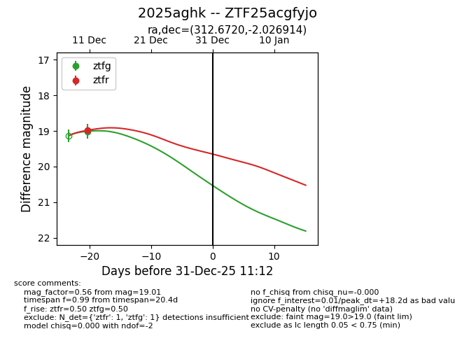
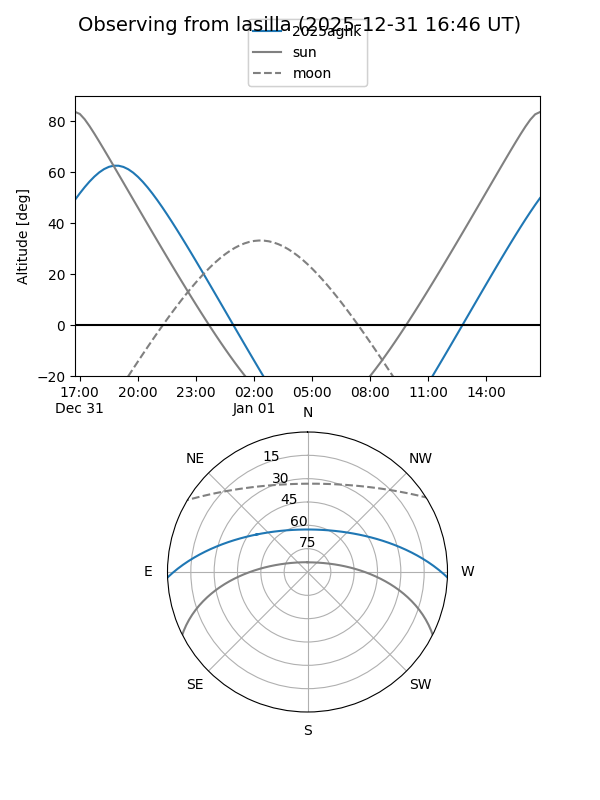

2025aghk
Target 2025aghk at 2025-12-18 11:17
Aliases and brokers:
FINK: fink-portal.org/ZTF25acgfyjo
Lasair: lasair-ztf.lsst.ac.uk/objects/ZTF25acgfyjo
ALeRCE: alerce.online/object/ZTF25acgfyjo
TNS: wis-tns.org/object/2025aghk
YSE: ziggy.ucolick.org/yse/transient_detail/2025aghk
alt names
ZTF25acgfyjo (ztf,fink_ztf)
2025aghk (tns,yse)
Coordinates:
equatorial (ra, dec) = 312.6720,-2.02691
equatorial (HMS+DMS) = 20:50:41.29,-02:01:36.89
galactic (l, b) = (45.6110,-27.27882)
Photometry
last ztfg=19.01, ztfr=18.98
1 ztfg, 1 ztfr detections
Lightcurve

Visibility


Additional plots